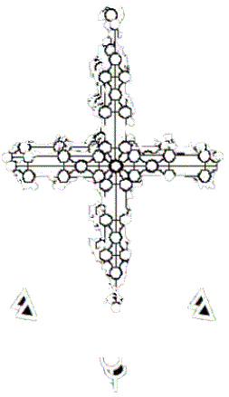

Elders at Intersections:
. . . our vision darkened by the prisms
through
which we had been taught to gaze,
we look back, that we might understand
and go ahead
with confidence . . .
As the revelations that brought this book began to unfold in my life, I was on the threshold of a new understanding of scripture and the ways of hy. I'd heard rumors of the mystical kabbalah, but I supposed that its secrets were contained in a single book, somewhere; and I had vainly tried to locate a copy for my personal education, without success. Imagine my surprise, then, when I found its diverse systems rushing upon me like a mighty flood: a good while before any kabbalistic text was given into my hands!
Fool that I was and am, I was still a novice concerning accepted scripture when the eclectic teachings of kabbalah came in response to my call for awareness of their existence! I found myself standing with one leg in the realm of literal understandings and the other in the realm of spiritual interpretations; and I had many opportunities to thank the Father of Light that he had founded me on the Rock that underlies all sound interpretation some thirteen years before I began intensive study of the accepted canon.
It seems important, to me, that I confess my lack of sophistication with regards to scriptural interpretation, in general, when this phase of my experience began to unfold in my life. The background is not of great significance in itself, nor even unusual. One would expect novices to be unschooled. Details of my lack of preparation wouldn't be expedient; but those unfamiliar with kabbalah should know that these pages were not entrusted to a kabbalistic apologist, but to one who-- just three years previous to writing about these things-- was, himself, reluctant to take up this arm of mysticism.
In prayer for guidance at the beginning of committed study of scripture and my cautious inquiry into the value of kabbalah, I was admonished by the Small Voice: namely, ImmanuAL; owcwhy Yahushua: Angel of the Presence, "If I open a door for you, you ought to go through it!" Amazed at the gentle rebuke for my lack of faith, I determined in myself to abandon-- once and for all (I thought)-- the paths I had imagined that I ought to be taking; and to take daily, as I should be enabled, those steps prepared for me from above, if only I could recognize them and actually do them: "Sufficient unto the day," as it's written.
Immediately upon settling my will on obedience, I began receiving visions of lines written upon my soul-- such as David must have seen when he received the pattern for the first temple at Jerusalem. One of my first impressions, when introduced to traditional representations of Adam Kadmon, was that the symbol was, in some way, incomplete. Not knowing why, I had begun extending its lines beyond their usual limits. Now, I saw in the Spirit that those lines were leading somewhere specific, or to some specific thing-- a new or greater or more complete symbol and revelation: but if not new, then a restoration of something very old, indeed.
Its origins unknown, to my knowledge, Adam Kadmon is an ancient symbol of the First Adam, whose design was in the likeness, the image, of the Elohim and of the Second Adam, a pattern in which spiritual men can discern the clear imprint of the Complete Adam. These pages present the symbol of the Life Tree both in its familiar form and in its expanded form of young foliage, the Crown Diamond. Know, therefore, that full summer of the Davidic Kingdom is, even now, at the very doors.
To differentiate between the Adam Kadmon of tradition and its extended portrayal in this work, Michael Murphy, the elder with whom I was working when the vision began to unfold, named the diagram of the interlocking Trees of Life, calling it "The Crown Diamond of the Believers' Tree of Life"; and by that name do I make it known. "Crown" refers to the first emanation of Adam Kadmon, which is called Kether in the Hebrew tongue, and as "Supreme Crown" in English usage.
The diagrams collected into earlier editions of the Crown Diamond book and into these html pages are being presented in this medium to aid those called into the dimensions and applications of the symbol of the Tree of Life. Studies of the sacred Tree-- and these pages merely present symbolic representations of that Reality, which are by no means to be mistaken for the Life Tree, Itself-- are lawful for all who have risen from the dead-- from their carnal understandings (Matt. 17:9, and who have also overcome in the Church of Asia at Ephesus. The study is lawful for those who are fully devoted to the spiritual life (Rev. 2:7).
Such a one will look upon these symbols in prayer, trusting that the Spirit of Truth will reveal the twelve manners of fruits in their seasons. He will not struggle idolatrously to attain insights (1 Tim. 4:8), but will rest in the blessings given into his hands. This is the manner of supplicants who wait upon the blessing of hwhy; for "it is not for man to direct his steps."
To paraphrase the words of the author of The Zohar to students engaged in studies of Adam Kadmon, "Blessed is he who has entered therein and departed therefrom, but cursed be he who enters therein and does not depart therefrom; it would be better for him if he had never been born." The carnal mind cannot learn the secret things of Elohim by this presentation or by study and application of any human contrivance. The Tabernacle of David, a temple being built without hands, is rebuilt in the Spirit: within the Breath of we who breathe.
The purpose of this work is simply to present the fruit of the Spirit as it has been received; for the fruit contains the seed, as elder Shmuel teaches, "the seed: which, finding fertile soil, will raise unto the Life that begat it yet more abundant life." Any insights, revelations, and applications derived from reception of this study in years or ages to come, it is therefore understood, must be received in harmony with both Holy Scripture and the indwelling witness of the Holy Spirit. That is the way of kabbalah.
Genesis 15:19 tells us that the land of the Kadmonites (those who study the Projection of Adam) is given unto Avraham and to his seed, the Body of Messiah. To inherit this spiritual land as a lasting possession, it must be stressed, one must adhere to the teachings of the Second Adam, who pointed the way to the true Door within the holy of holies, which lies in the Yahrushalem that is above: the City of David, the Chamber of the High Father-- His Meeting Place, the bosom of Father Avraham. Some other focus, as upon the symbols themselves, will end in the distortions of idolatry, the invalidations of Truth.
It is not the purpose of this work to develop a cohesive system of interpretation, though many interpretations are included herein, and not without system. Interpretations belong to hwhy and come by the Breath, through whatever means he might choose. Nor is the purpose of this book to generate applications, which also belong to HaShem, and which shall unfold by his Wisdom in due course. Yet more, it is not this work's purpose to present every insight expedient for understanding the symbols, themselves, which purpose shall be fulfilled by the ongoing guidance of the Spirit of Truth. John the Revelator has testified that the twelve manners of fruit come in their seasons-- in their times.
|
|
|
||||
| |||||